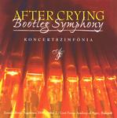

Home Artist links Label link

After Crying - Bootleg Symphony
| Artist: | After Crying |
| Title: | Bootleg Symphony |
| Label: | Stereo Periferic BGCD 080 |
| Length(s): | 55 minutes |
| Year(s) of release: | 2001 |
| Month of review: | [07/2001] |
Line up
Gábor Egervári - lyrics, narration, live sound
Tamás Görgenyi - artistic director, lyrics
Peter Péjtsik - cello, bass, compositions, conductor
Ference Torma - guitar, synth, compositions
Balázs Winkler - trumpet, piano, keyboards, composition, conductor
Gábor Légrádi - lead vocals
Zoltán Lengyel - steinway grand piano, korg trinity prox, background vocal
Zsolt Madai - roland v'drum, sabian cymbals, snare drum, vibraphone, timpani (3)
The soloists are
Judit Andrejszki - lead vocals on 3, 14
Kristóf Fogloly´n - flute on 14
Pál Makovecz - trombone on 14
Mónika Szabó - flute on 10, 12
László Borsódy - trumpet on 10, 14
Vilmos Horváth - bassoon on 12, 14
Gyögy Reé - clarinet on 12
Zsófia Winkler - viola on 14
Tracks
| 1) | Viaduct | 6.00
|
| 2) | Struggle For Life I | 5.23
|
| 3) | Enigma | 1.15
|
| 4) | Struggle For Life II | 3.15
|
| 5) | Suburban Night | 3.19
|
| 6) | Cool Night | 3.48
|
| 7) | Night-red | 3.24
|
| 8) | Coll Night Reprise | 2.17
|
| 9) | Arrival Of Manticore | 2.28
|
| 10) | Aqua | 2.01
|
| 11) | Intermezzo | 2.39
|
| 12) | Burlesque | 3.04
|
| 13) | Finale | 4.26
|
| 14) | Shinin' | 11.37
|
Summary
It had to come: the music of After Crying played by an orchestra. The music is
in principle well suited for this. Now to hear whether this pans out in practice.
The music
The beginning of the album is full of drama and quite a bit of tenseness.
The music has a lot of aspects of modern cinema music. The middle part
is quite proggy and busy with plenty of trumpet. Struggle For Life is one
of the major After Crying tracks and it is split by a short track called
Enigma. The melodies of Struggle For Life are majestic and broken only by
a rather adverse in part II.
The second movement opens with the mystery of Suburban Night. Cello and
guitar build a good atmosphere and the trumpet is extremely touching.
Cool Night has piano for the most part and some vocals as well, but they
sound very far away. Not well produced or recorded probably.
Night-Red is a new After Crying track and combines film music with tense
Crimsonesque passages. The final part of the movement is Cool Night Reprise
which has somewehat jazzy sounding vocals.
After the orchestral Arrival Manticore, Aqua is much more soothing, fiddly
but melodious. Intermezzo seems to me a bit shrill and sounds somewhat
Arabic in melody. The final part is like piano music for the silent movies
of the twenties. This is so far the weakest movement.
And it turns out to be the one, because the final movement is the best.
Starting off with the tenseness of Big Evil Fun Fair Finale (simply called
Finale here), we continue and close with the over 11 minutes of
Shinin'. This songs combines a certain lightheadedness with a ponderous
other side. The vocals are a bit like The Lovers of Steve Hackett. A very moody
track on the whole and beautiful at that.
Conclusion
The cd is only 55 minutes, but the concert was much longer. I would
certainly like to hear the rest as well, because this is very good.
For the people who found their studio albums a bit too fickle, this is
a very good place to start.
© Jurriaan Hage